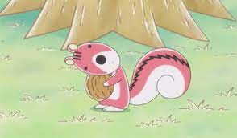

보노보노의 등장 청설모. 일본 이름은 시마리스 군, 즉 직역하면 그냥 줄무늬다람쥐 군이다. 한국판은 너부리와 함께 뛰어난 작명센스를 보여줬다. 보노보노가 조개를 들고 다니면, 포로리는 호두를 들고 다닌다. 여자들이 많은 집에서 막둥이로써 누나들인 아로리와 도로리에게 둘러쌓여 자라서 그런지 여자애같은 말투를 많이 쓰고, 다람쥐인탓도 있겠지만 몸집이나 키도 작고 연약해보이고 곱게 생긴 외형에 목소리도 여자아이같고, 그래서 초창기에는 포로리를 암컷으로 착각한 사람이 많았는데 엄연한 수컷이다. 그러나 작품이 뒤로 갈 수록 오토코노코스러운 면이 많이 없어진다. 월트 디즈니와 톰과 제리 캐릭터 중에서는 도날드 덕과 톰보다 힘은 약하지만 재치를 써서 도날드와 톰을 약올리고 된통 혼내주고 물리치는 귀엽고 얄미운 칩과 데일과 제리같은 포지션이다. 다만 원작에선 30권에서 너부리 아빠랑 대판 싸우고 난 이후로는 맨날 자신을 괴롭히던 너부리는 물론 심지어, 야옹이형이나 절친인 보노보노에게도 얄짤없이 버럭 화를 내거나 폭력을 가하는 경우가 생겼고, 그렇게 무서워해대던 아로리에게도 지지않고 자기 쪽에서 아예 먼저 도발을 하거나, 반항적인 태도를 취하는 횟수가 부쩍 느는 등 성격이 매우 신경질적으로 변화했다. 국내에서는 암컷으로 성전환 되었는데 이는 '말투가 여자인 남자'라는 설정이 아이들의 성 정체성에 문제를 일으킬 수 있어서라고 한다. 96년 당시에 성 고정관념이 큰것도 한몫했다. 하지만 여자로 설정하면 너부리가 포로리를 때리는 장면에서 남자아이가 여자아이를 때리는 것 때문에 문제가 일어나기도 한다. 포로리 본인이 손윗 누이들을 "큰누나, 작은누나"가 아니라 "큰언니, 작은언니"라고 부르는 데다가 너부리가 포로리를 때리려하는 장면에서 아로리가 보노보노에게 "여자아이(포로리)를 지켜줄 생각도 안하냐!"라고 하는 등 한국판에선 확실하게 여자아이로 성전환되었음을 보여준다.